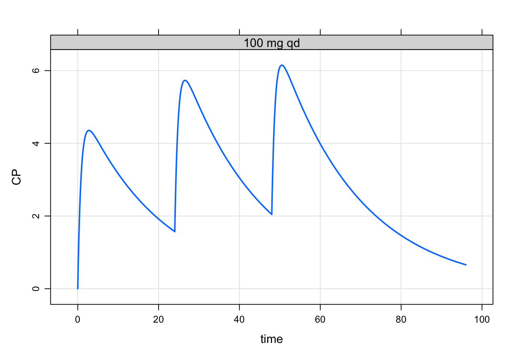
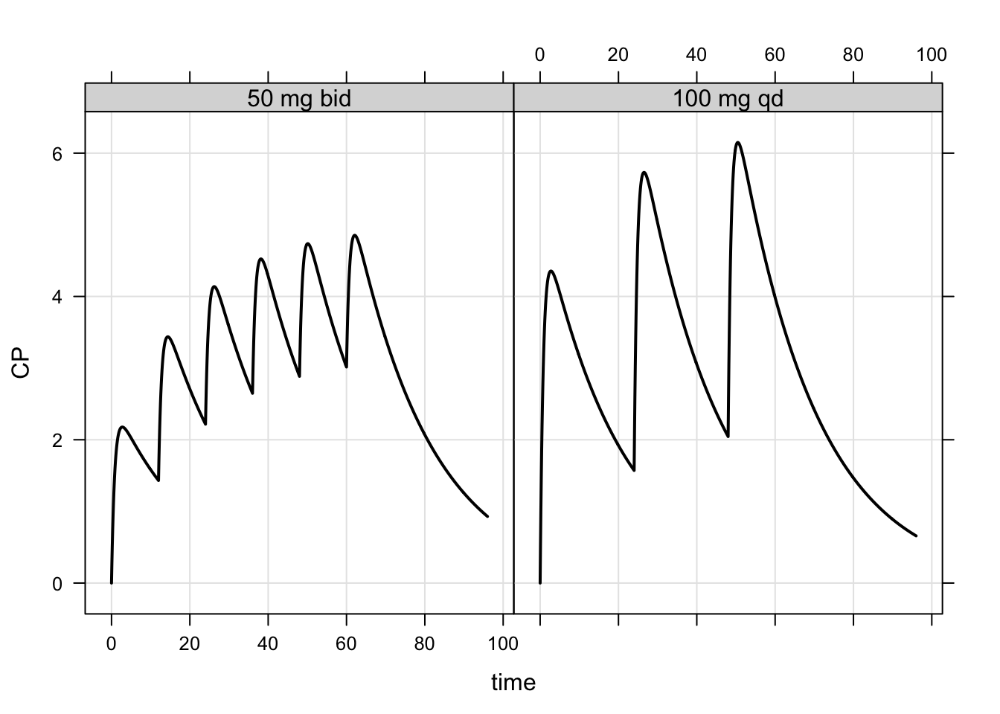
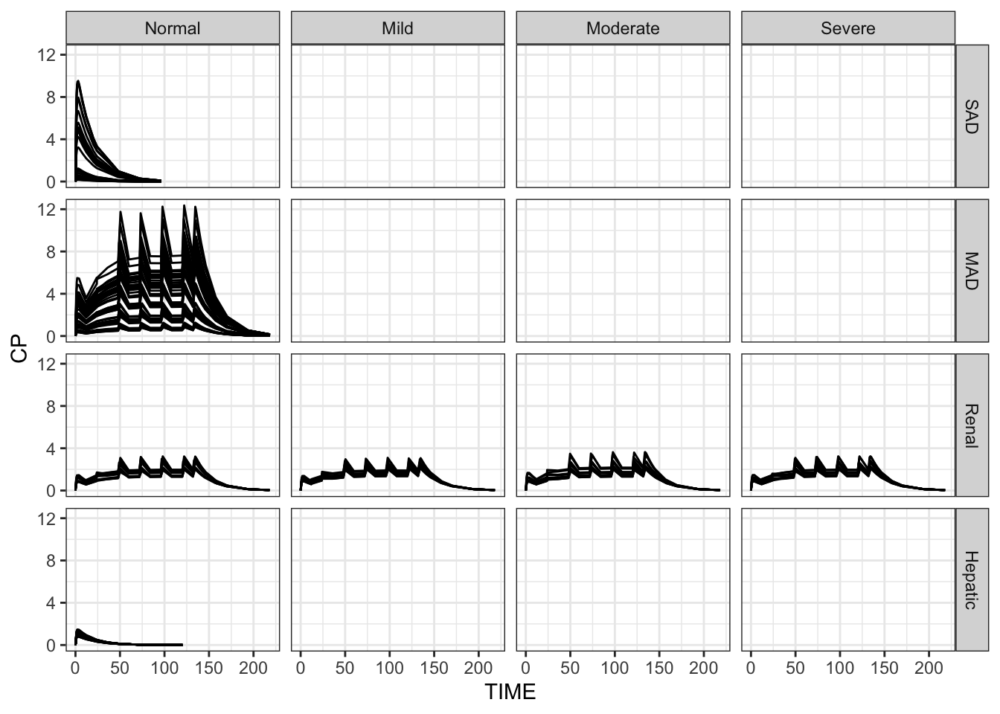

We frequently want to access in the simulated output data items that were present in input data sets. For example, if we have multiple studies represented in the data, we’d like to simulate all studies and then summarize or plot the results by study. We need to study number in the simulated output to do that.
For a long time, mrgsolve has had a carry_out feature, where input data columns can be selected and those input data automatically copied to the simulated (output) data. However, this has been limited to numeric data items.
Starting with mrgsolve version 0.10.4, users can bring non-numeric data items from input data to output. This feature is called recover.
library(tidyverse)
library(mrgsolve)
mod <- house(delta = 0.1, end = 96, outvars = "CP")As a very simple example, we’ll make an event object with a regimen item in it
qd <- ev_rx("100 q24 x3") %>% mutate(regimen = "100 mg qd")
qd. Events:
. time amt ii addl cmt evid regimen
. 1 0 100 24 2 1 1 100 mg qdWhen I simulate with this event object, I’ll recover the regimen item
out <- mrgsim(mod, qd, recover = "regimen")I now have the “regimen” in the simulated output as a character data item:
plot(out, CP ~ time |regimen)
as_tibble(out). # A tibble: 962 × 4
. ID time CP regimen
. <dbl> <dbl> <dbl> <chr>
. 1 1 0 0 100 mg qd
. 2 1 0 0 100 mg qd
. 3 1 0.1 0.564 100 mg qd
. 4 1 0.2 1.06 100 mg qd
. 5 1 0.3 1.50 100 mg qd
. 6 1 0.4 1.89 100 mg qd
. 7 1 0.5 2.23 100 mg qd
. 8 1 0.6 2.52 100 mg qd
. 9 1 0.7 2.79 100 mg qd
. 10 1 0.8 3.02 100 mg qd
. # … with 952 more rowsNow, make another group and simulate together
bid <- ev_rx("50 q12 x6") %>% mutate(regimen = "50 mg bid")
data <- as_data_set(bid,qd) I’m going to turn this into a factor now …
data <- mutate(data, regimen = fct_inorder(regimen))
data. ID time cmt evid amt ii addl regimen
. 1 1 0 1 1 50 12 5 50 mg bid
. 2 2 0 1 1 100 24 2 100 mg qd… so that when I summarize, the levels are in the order I want:
out <- mrgsim(mod, data, recover = "regimen")
out %>%
group_by(regimen) %>%
summarise(Cmax = max(CP)). # A tibble: 2 × 2
. regimen Cmax
. <fct> <dbl>
. 1 50 mg bid 4.85
. 2 100 mg qd 6.15plot(out, CP~time|regimen, scales="same", col = "black")
There is no real change if I’m using recover with a data set
head(data). C NUM ID SUBJ TIME SEQ CMT EVID AMT DV AGE WT CRCL ALB BMI
. 1 NA 1 1 1 0.00 0 1 1 5 0.000 28.03 55.16 114.45 4.4 21.67
. 2 NA 2 1 1 0.61 1 2 0 NA 61.005 28.03 55.16 114.45 4.4 21.67
. 3 NA 3 1 1 1.15 1 2 0 NA 90.976 28.03 55.16 114.45 4.4 21.67
. 4 NA 4 1 1 1.73 1 2 0 NA 122.210 28.03 55.16 114.45 4.4 21.67
. 5 NA 5 1 1 2.15 1 2 0 NA 126.090 28.03 55.16 114.45 4.4 21.67
. 6 NA 6 1 1 3.19 1 2 0 NA 84.682 28.03 55.16 114.45 4.4 21.67
. AAG SCR AST ALT HT CP TAFD TAD LDOS MDV BLQ PHASE STUDY RF
. 1 106.36 1.14 11.88 12.66 159.55 0 0.00 0.00 5 1 0 1 SAD norm
. 2 106.36 1.14 11.88 12.66 159.55 0 0.61 0.61 5 0 0 1 SAD norm
. 3 106.36 1.14 11.88 12.66 159.55 0 1.15 1.15 5 0 0 1 SAD norm
. 4 106.36 1.14 11.88 12.66 159.55 0 1.73 1.73 5 0 0 1 SAD norm
. 5 106.36 1.14 11.88 12.66 159.55 0 2.15 2.15 5 0 0 1 SAD norm
. 6 106.36 1.14 11.88 12.66 159.55 0 3.19 3.19 5 0 0 1 SAD norm
. SEQ_f EVID_f MDV_f BLQ_f PHASE_f RENAL HEPATIC
. 1 observation 1 1 below Q 1 Normal normal
. 2 dose 0 0 below Q 1 Normal normal
. 3 dose 0 0 below Q 1 Normal normal
. 4 dose 0 0 below Q 1 Normal normal
. 5 dose 0 0 below Q 1 Normal normal
. 6 dose 0 0 below Q 1 Normal normalSame idea as we had in event objects:
out <- mrgsim(mod, data, recover = "WT,CRCL,STUDY,HEPATIC,RENAL")We copy either numeric, character, or factors into the output
as_tibble(out). # A tibble: 4,360 × 8
. ID TIME CP WT CRCL STUDY HEPATIC RENAL
. <dbl> <dbl> <dbl> <dbl> <dbl> <fct> <fct> <fct>
. 1 1 0 0 55.2 114. SAD normal Normal
. 2 1 0.61 0.162 55.2 114. SAD normal Normal
. 3 1 1.15 0.229 55.2 114. SAD normal Normal
. 4 1 1.73 0.261 55.2 114. SAD normal Normal
. 5 1 2.15 0.271 55.2 114. SAD normal Normal
. 6 1 3.19 0.273 55.2 114. SAD normal Normal
. 7 1 4.21 0.263 55.2 114. SAD normal Normal
. 8 1 5.09 0.253 55.2 114. SAD normal Normal
. 9 1 6.22 0.238 55.2 114. SAD normal Normal
. 10 1 8.09 0.216 55.2 114. SAD normal Normal
. # … with 4,350 more rowsAnd we can summarize
out %>%
filter(TIME < 24) %>%
group_by(STUDY,HEPATIC,RENAL) %>%
summarise(Cmax = max(CP)). `summarise()` has grouped output by 'STUDY', 'HEPATIC'. You can override using the `.groups` argument.. # A tibble: 10 × 4
. # Groups: STUDY, HEPATIC [7]
. STUDY HEPATIC RENAL Cmax
. <fct> <fct> <fct> <dbl>
. 1 SAD normal Normal 9.53
. 2 MAD normal Normal 5.52
. 3 Renal normal Normal 1.60
. 4 Renal normal Mild 1.59
. 5 Renal normal Moderate 1.95
. 6 Renal normal Severe 1.54
. 7 Hepatic normal Normal 1.47
. 8 Hepatic Pugh1 Normal 1.40
. 9 Hepatic Pugh2 Normal 1.28
. 10 Hepatic Pugh3 Normal 1.45sims <- as_tibble(out)
ggplot(sims, aes(TIME,CP,group=ID)) +
facet_grid(STUDY~RENAL) +
geom_line() + theme_bw()
There should not be a difference in the simulation result whether you use carry_out or recover (outside of the fact that recover takes any type of data).
There will be a very minor performance hit for using recover because it has to join the input data on to the simulated data. But this should be imperceptible in the vast majority of cases. Of course, when every microsecond of simulation time counts, think carefully about what you are doing and consider more efficient alternatives. Remember that features like carry_out and recover are convenience features to make you life easier. They always increase the overall simulation time to some degree or another. So when benchmarking mrgsolve, you should always consider if carry_out or recover are being used or not.
recover depends on carry_out functionality to work: under the hood, we label the input data rows with an index number, carry_out that index, and then use that index to join input to output data. So carry_out won’t go away. But I’m guessing that recover will be fine for most applications.
Going forward, I will be adding other convenience functions around recover and working to make it a more convenient part of your workflow.
mrgsolve: mrgsolve.github.io | metrum research group: metrumrg.com